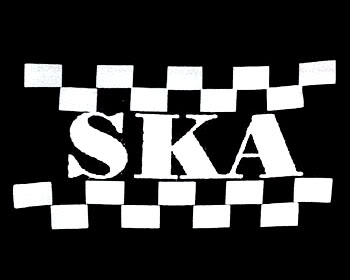

Ska

El ska comenzó con un estilo musical originario de Jamaica, donde floreció durante la primera mitad de la década de 1960 y que deriva principalmente de la fusión de la música negra americana de la época muy conocida que se dio con los ritmos populares propiamente carabeaos, siendo el precursor directo del rocksteady y, más tarde, del reggae. Perfil su particular identidad, entre callejera, nostálgica y "misteriosa", característica que conservarla atravesó de las épocas. Además estuvo fuertemente asociado a los Rude Boy y a la independencia de Jamaica del Reino Unido, aunque se hizo popular en todo el mundo desde muy poco tiempo después de su nacimiento.
Página
Portada